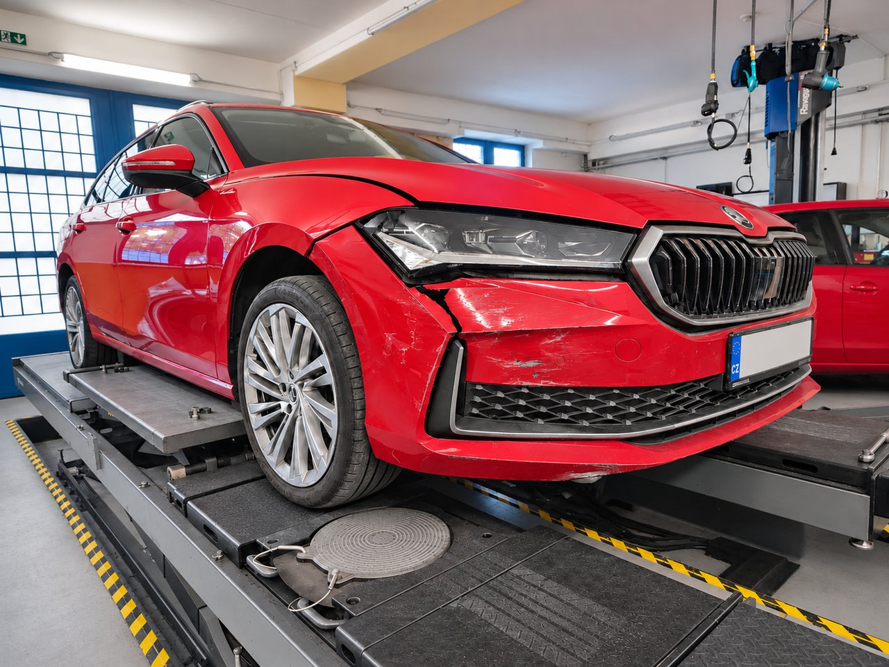

Post-accident vehicle inspection

After a traffic accident, not all damage may be apparent at first glance. At J&S SERVIS, we will perform an initial technical inspection of Volkswagen, Audi, Škoda, SEAT and CUPRA vehicles and recommend the next course of action.
What does the inspection include?
- Assessment of visible damage to the vehicle.
- Checks of accessible safety and technical components.
- Recommendations for follow-up diagnostics, measurements or repairs.
Help with insurance claims
If after an accident you need advice on the next procedure or communication with the insurance company, you can contact us. Depending on the specific situation, we will agree with you what we can help you with and to what extent.
Scope and cost of inspection
We will discuss the scope of further work and estimated costs with you in advance. Diagnostics, disassembly and repairs are billed separately upon agreement.
The initial inspection does not replace an expert opinion or a full inspection after dismantling the damaged components. It cannot rule out all hidden damage.

Before booking
When booking, describe the damage and the vehicle’s condition; for a hybrid or electric vehicle, arranging acceptance in advance is particularly important. Alignment or driver-assistance calibration may follow according to the findings; they are not an automatic package for every accident.